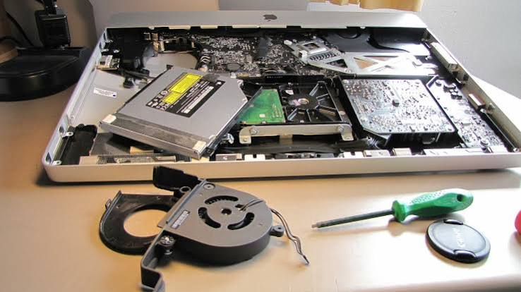
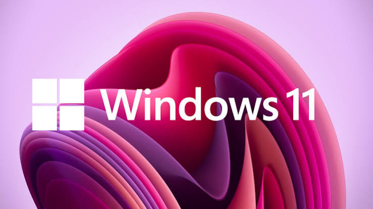

Laptop & Desktop Repair
Diagnosis of slow, damaged, overheating, noisy or non-booting computers.
Fast, practical support for laptops and desktops — from Windows and Office installation to hardware repairs, upgrades and everyday troubleshooting.

Diagnosis of slow, damaged, overheating, noisy or non-booting computers.

Office installation and configuration for Word, Excel, PowerPoint and more.
Help with crashes, errors, freezes, startup issues and connectivity problems.
Performance checks, cleanup and practical hardware upgrade advice.

Configure everyday software, printers, peripherals and essential PC tools.
Practical computer support without the unnecessary complications.
Most common computer issues can be diagnosed within 2 hours.
We stay with you through the repair and help make sure your computer is ready to use.
No unnecessary surprises. We explain the problem and the recommended fix before proceeding.
We can arrange computer pickup from your home or office within Kilifi.
At Dr. Boot's place, we understand how frustrating it is when your Computer fails.
Whether you are a student, a business professional, a gamer or you are working from home,
a faulty machine can bring your entire day to a halt. That's why we offer comprehensive, expert laptop and desktop repair
services designed to get you back up and running.
And on another level, we would be more than happy to bring to life your old machine sitting at home and:
Need a fresh Windows installation or your current system is giving you trouble? Dr. Boot provides Windows installation, driver setup, updates and essential configuration to get your computer ready for everyday use.
Get Microsoft Office installed and properly configured for your work or studies. We can set up essential applications such as Word, Excel and PowerPoint and make sure everything is ready to use.
Is your computer freezing, crashing, showing errors or refusing to start? We diagnose common software, hardware and connectivity problems to identify what is actually causing the issue before recommending a fix.
A slow computer doesn't always need to be replaced. We check for unnecessary software, startup problems, storage issues and other performance bottlenecks, while also advising on upgrades that can make your machine faster.
Need help setting up a printer, application, peripheral or other PC device? Dr. Boot can configure essential software and devices so they work properly with your computer.
Call Dr. Boot to let your machine get back running.